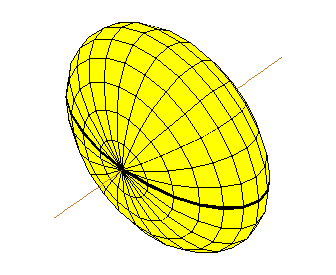
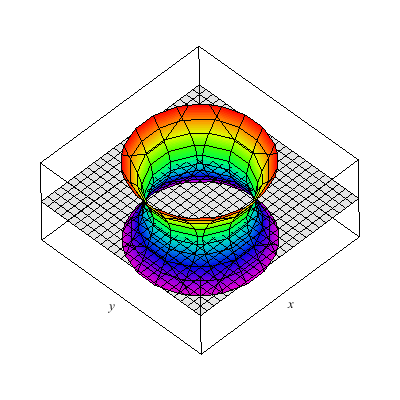
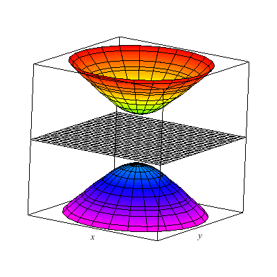
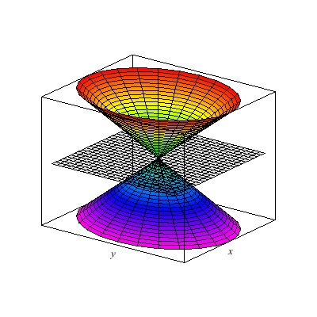
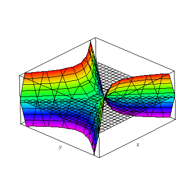

Index
Cylinders
- Their equations only have two variables.
- These equations give a trace of the curve on the coordinate plane of the two given coordinates.
- The curve is directed along the axes of the missing variable.
- The curve/trace does not change along the direction axes.
Steps to draw Cylinders
- Find trace along the coordinate plane.
- Direct it towards the direction of the missing axis.
- To draw a cylinder of \(y=x^2\), for example, first draw the paraola on the \(xy\) plane, then direct it along the \(z\)-axis.
General Surfaces
- Have all three variables.
- Traces occur on coordinate planes or planes parallel to coordinate planes.
- Still directed along an axis but changes along it.
Steps to draw Surfaces
- Determine the type of surface.
- Determine the direction axis.
- Find the trace on coordinate plane.
- Find at least two other traces.
Some common types of Surfaces
Ellipsoids
- General form:
\[\frac{x^2}{a^2}+\frac{y^2}{b^2}+\frac{z^2}{c^2}=1\]
- How to tell:
- All have positive coefficients.
- All have a power of 2.
- Has a constant
- Intercepts:
- \(x=\pm a\)
- \(y=\pm b\)
- \(z=\pm c\)

An ellipsoid.
1 Sheet Hyperboloid
- General form:
\[\frac{x^2}{a^2}+\frac{y^2}{b^2}-\frac{z^2}{c^2}=1\]
- How to tell:
- Has one negative coefficient.
- All have a power of 2.
- Has a constant.
- Notes:
- Always decreasing along the axis with the negative coefficient.
- Set the variable with the negative coefficient to 0 and ±√(denominator) to get three traces, which are usually circles or ellipses.

A one-sheet Hyperboloid.
2 Sheet Hyperboloid
- General form:
\[\frac{x^2}{a^2}-\frac{y^2}{b^2}-\frac{z^2}{c^2}=1\]
- How to tell:
- Has one positive coefficient.
- All have a power of 2.
- Has a constant.
- Notes:
- Set both variables with negative coefficients to 0 to get the axis intercepts.
- It's easy to use a variable divisible by the positive coefficient's denominator to obtain a cross section (as an ellipse or a circle) of both parts of the Hyperboloid.

A two-sheet Hyperboloid.
Cones
- General form:
\[\frac{x^2}{a^2}+\frac{y^2}{b^2}-\frac{z^2}{c^2}=0\]
- How to tell:
- Has one negative coefficient.
- All have a power of 2.
- Has no constants.
- Notes:
- Place in a value divisible by ±√(denominator) of the variable with the negative coefficient to get an ellipse or circle on opposite ends of the axis with the negative coefficient.

An elliptical cone.
Paraboloids
Hyperbolic Paraboloids
- General Form:
\[\frac{x^2}{a^2}-\frac{y^2}{b^2} = cz +d\]
- How to tell:
- Three variables with two having a power of two and one having a power of one.
- One of the variables with the power of two has a negative coefficient.
- Notes:
- The degree one variable is the direction axis.
- Plug in positive and negative values to the degree one variable to give two different sets of equations that describe the trace.

A hyperbolic Paraboloid.
Vector Functions